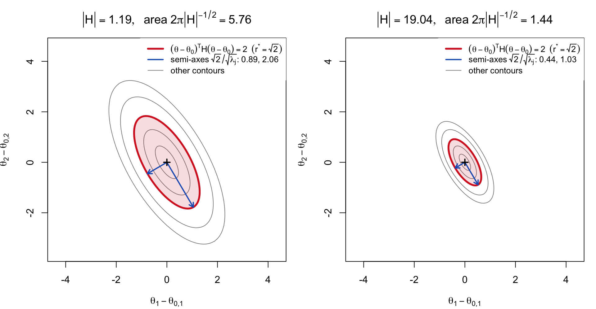
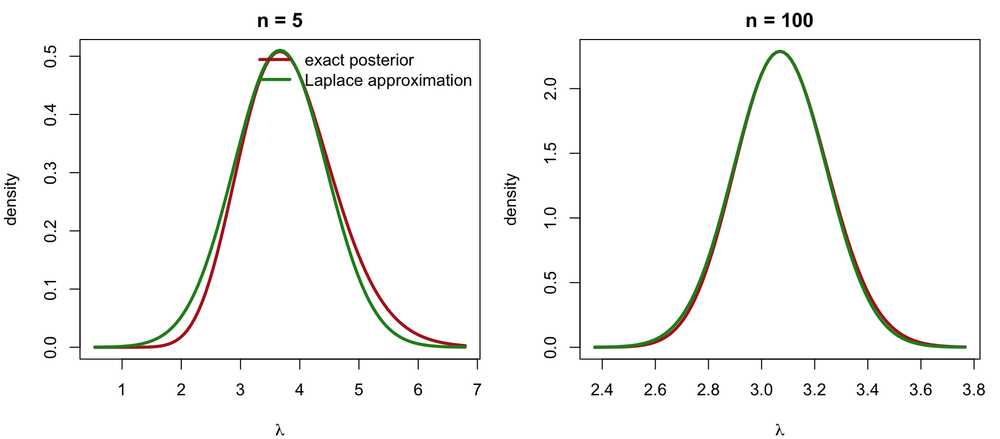
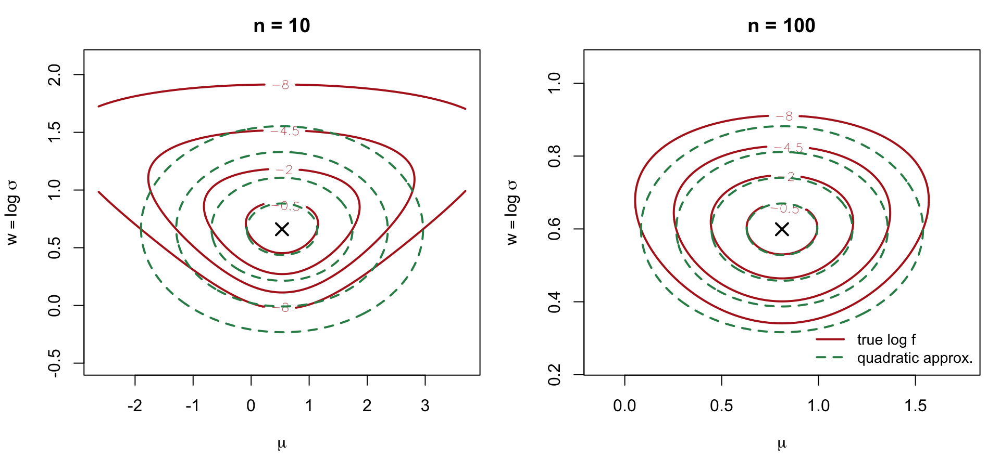
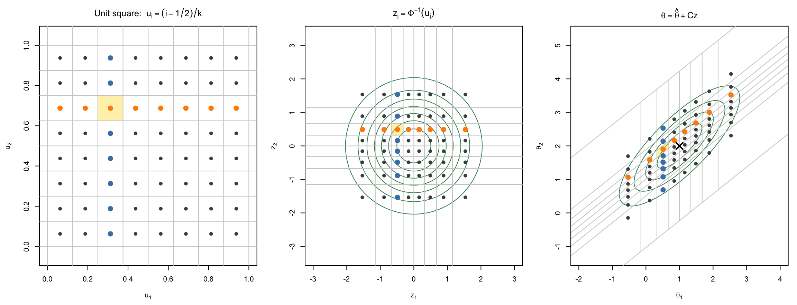

The previous chapter approximated an integral by a weighted sum of function values on a grid. A grid gets expensive fast: an \(n\)-point-per-axis product grid costs \(n^d\) evaluations, so quadrature is only practical for \(d \lesssim
3\). The Laplace approximation takes a completely different route: instead of evaluating the integrand everywhere, it looks only at the single most important point — the mode — and replaces the whole integrand there by the Gaussian that matches its height and curvature. No grid is needed at any dimension, at the price of assuming the integrand is roughly bell-shaped.
9.1 Laplace Approximation Formula
The goal and the idea. Many Bayesian calculations are posterior expectations \[
E_f\big[a(\theta)\big] = \frac{\int a(\theta)\,f(\theta)\,d\theta}{\int f(\theta)\,d\theta},
\] where \(\theta \in \mathbb{R}^p\), \(a(\theta)\) is some quantity of interest (a parameter, a prediction, an indicator), and \(f(\theta)\) is an unnormalized posterior, typically \(f(\theta) = L(\theta)\pi(\theta)\). Both numerator and denominator are \(p\)-dimensional integrals.
Write \(h(\theta) = -\log f(\theta)\), so \(f(\theta) = e^{-h(\theta)}\). For independent data, \(h\) is (up to an additive constant) minus the log-likelihood plus minus the log-prior — a sum of \(n\) terms — so as \(n\) grows it becomes large and sharply curved at its minimum. This is the same large-sample regularity that makes the MLE asymptotically normal (seen in the maximum-likelihood chapters); here it makes the posterior asymptotically normal too. The Laplace approximation makes this precise by expanding \(h\) to second order at its minimum and integrating the resulting Gaussian exactly — no grid, no sampling, just one optimization and one Hessian.
Derivation. Let \(\theta_0 = \arg\min_\theta h(\theta)\), the posterior mode, found numerically (optim(..., hessian = TRUE) or nlm(..., hessian = TRUE) in R — exactly the optimizers used to find the MLE in earlier chapters). Expand \(h\) around \(\theta_0\): \[
h(\theta) = h(\theta_0) + \underbrace{\nabla h(\theta_0)^\top}_{=\,0\text{ at the minimum}}(\theta - \theta_0)
+ \tfrac12(\theta-\theta_0)^\top H (\theta - \theta_0) + O\big(\|\theta-\theta_0\|^3\big),
\qquad H = \nabla^2 h(\theta_0).
\]\(H\), the Hessian of \(-\log f\) at the mode, is positive definite at a genuine minimum; for \(f = L\pi\) it is the observed information plus the curvature of the log-prior. Dropping the cubic remainder and exponentiating, \[
f(\theta) \approx \tilde f(\theta) = f(\theta_0)\exp\Big\{-\tfrac12(\theta-\theta_0)^\top H(\theta-\theta_0)\Big\}.
\] The exponential factor is, up to its normalizing constant, the density of \(N_p(\theta_0, H^{-1})\), \[
\varphi_H(\theta) = (2\pi)^{-p/2}\,|H|^{1/2}\exp\Big\{-\tfrac12(\theta-\theta_0)^\top H(\theta-\theta_0)\Big\},
\] so multiplying and dividing by \((2\pi)^{-p/2}|H|^{1/2}\) splits \(\tilde f\) into a constant times a density: \[
\tilde f(\theta) = c\cdot\varphi_H(\theta), \qquad c = f(\theta_0)\,(2\pi)^{p/2}\,|H|^{-1/2}.
\] Two results follow immediately, since \(\varphi_H\) is a properly normalized density that integrates to \(1\):
Geometric meaning of \(|H|\). The second result says that the integral is the height of \(f\) at its mode times a volume, \((2\pi)^{p/2}|H|^{-1/2}\). The volume is that of a contour of \(\tilde f\). The contours are the ellipsoids \[
E_r = \big\{\theta : (\theta-\theta_0)^\top H(\theta-\theta_0) \le r^2\big\}.
\] If \(\lambda_1,\ldots,\lambda_p\) are the eigenvalues of \(H\), \(E_r\) has semi-axes of length \(r/\sqrt{\lambda_j}\) along the eigenvectors of \(H\), so its volume is \[
\operatorname{vol}(E_r) = V_p\, r^p \prod_{j=1}^p \frac{1}{\sqrt{\lambda_j}} = V_p\, r^p\,|H|^{-1/2}, \qquad V_p = \frac{\pi^{p/2}}{\Gamma(p/2+1)},
\] where \(V_p\) is the volume of the unit ball in \(\mathbb R^p\). Setting \(\operatorname{vol}(E_r) = (2\pi)^{p/2}|H|^{-1/2}\) and solving for \(r\) gives \[
r^\ast = \sqrt2\;\Gamma\big(p/2+1\big)^{1/p}, \qquad \int f(\theta)\,d\theta \approx f(\theta_0)\cdot\operatorname{vol}\big(E_{r^\ast}\big).
\] So the Laplace approximation replaces the bell-shaped \(f\) by a flat-topped cylinder of height \(f(\theta_0)\) over the contour ellipsoid \(E_{r^\ast}\), which has the same volume as the Gaussian \(\tilde f\). For \(p=1\), \(r^\ast=\sqrt{\pi/2}\approx1.25\) and \(E_{r^\ast}\) is the interval \(\theta_0\pm r^\ast/\sqrt H\), of length \(\sqrt{2\pi/H}\); for \(p=2\), \(r^\ast=\sqrt2\) and \(E_{r^\ast}\) is the ellipse of area \(\pi r^{\ast2}|H|^{-1/2} = 2\pi|H|^{-1/2}\). As \(p\) grows, \(r^\ast\approx\sqrt{p/e}\), far inside the typical radius \(\sqrt p\) of the normal distribution, so \(E_{r^\ast}\) holds less and less of the posterior probability.
A large \(|H|\) means strong curvature, tight contours and a small integral; a small \(|H|\) means a flat, wide peak and a large integral, for the same height \(f(\theta_0)\). Figure 9.1 shows this for two Hessians that differ by a factor of \(4\), so \(|H|\) differs by \(4^2=16\) and the area of \(E_{r^\ast}\) by \(4\).
Code
local({ H1 <-matrix(c(2, 0.9, 0.9, 1), 2) # Hessian of -log f at the mode rs <-sqrt(2) # r* for p = 2: area of E_r* = 2 pi |H|^(-1/2)par(mfrow =c(1, 2), mar =c(4, 4, 3.2, 1))for (H inlist(H1, 4* H1)) { g <-seq(-5, 5, length.out =401) q <-outer(g, g, function(a, b) H[1, 1] * a^2+2* H[1, 2] * a * b + H[2, 2] * b^2)contour(g, g, exp(-q /2), levels =exp(-c(0.25, 1, 4, 6.25) /2), drawlabels =FALSE,col ="gray55", asp =1, xlim =c(-3.5, 3.5), ylim =c(-3.6, 4.6), xlab =expression(theta[1] - theta[0*","*1]),ylab =expression(theta[2] - theta[0*","*2]),main =bquote(list(group("|", H, "|") == .(round(det(H), 2)),~~"area"~2* pi *group("|", H, "|")^{-1/2} == .(round(2* pi /sqrt(det(H)), 2))))) cl <-contourLines(g, g, q, levels = rs^2)[[1]]polygon(cl$x, cl$y, col =adjustcolor("#D62728", 0.15), border ="#D62728", lwd =3) e <-eigen(H, symmetric =TRUE)for (j in1:2) { a <- rs * e$vectors[, j] /sqrt(e$values[j]) # semi-axis: length r* / sqrt(lambda_j)arrows(0, 0, a[1], a[2], length =0.08, lwd =2, col ="#1F5FBF") }points(0, 0, pch =3, lwd =2) ax <-round(rs /sqrt(e$values), 2)legend("topright", bg ="white", box.col =NA, cex =0.85, lwd =c(3, 2, 1), col =c("#D62728", "#1F5FBF", "gray55"),legend =c(expression((theta - theta[0])^T * H * (theta - theta[0]) ==2~~ (r^"*"==sqrt(2))),bquote("semi-axes"~sqrt(2) /sqrt(lambda[j]) *":"~ .(ax[1]) *","~ .(ax[2])),"other contours")) }})

Figure 9.1: Illustrates the geometric meaning of |H| in the Laplace approximation: the integral is the peak height times the area of a contour ellipse, which is proportional to |H|^(-1/2). Contours of exp{-(theta - theta_0)’ H (theta - theta_0) / 2} for two Hessians with the same peak height, H (left) and 4H (right), drawn on the same axes. The shaded ellipse is the contour (theta - theta_0)’ H (theta - theta_0) = r^2 with r = sqrt(2), whose area is 2 pi |H|^(-1/2): a cylinder of height f(theta_0) over it has the same volume as the Gaussian. Its semi-axes (blue) have lengths sqrt(2)/sqrt(lambda_j) along the eigenvectors of H. Multiplying H by 4 shrinks every semi-axis by 2, the area by 4, and so the Laplace integral by 4.
On the \(-2\log\) scale, the scale of deviances and information criteria, the second result reads \[
-2\log\int f(\theta)\,d\theta \;\approx\; -2\log f(\theta_0) + \log|H| - p\log(2\pi) \;=\; 2\,h(\theta_0) + \log|H| - p\log(2\pi),
\] and for a marginal likelihood, where \(f(\theta)=L(\theta)\,\pi(\theta)\) and \(P(y)=\int f(\theta)\,d\theta\), \[
-2\log P(y) \;\approx\; -2\log L(\theta_0) - 2\log\pi(\theta_0) + \log|H| - p\log(2\pi).
\] The first term measures fit at the mode; the other three penalize through the prior density at the mode and the volume of the posterior, \(|H|^{-1/2}\). This is the form from which BIC is derived in Section 9.3.1.
Only the mode and the Hessian of \(-\log f\) at the mode are needed — both come for free from any optimizer that returns a Hessian. The relative error of the second result is \(O(1/n)\) for regular models; the error of the first is governed by how skewed the true posterior actually is.
9.1.1 Example: A Poisson Rate with a Gamma Prior
To see the approximation against ground truth, use a model with a known exact answer: the Gamma–Poisson conjugate pair from the Bayesian Inference chapter. For \(y_1,\ldots,y_n \mid \lambda \sim \text{Poisson}(\lambda)\) and \(\lambda \sim \text{Gamma}(\alpha,\beta)\), the posterior is exactly \(\text{Gamma}(\alpha + \sum y_i,\ \beta+n)\), and the marginal likelihood derived there in closed form, \(\log P(\mathbf y) = \alpha\log\beta - \log\Gamma(\alpha) + \log\Gamma(\alpha+S)
- (\alpha+S)\log(\beta+n) - \sum_i\log(y_i!)\) with \(S=\sum_i y_i\), is exactly exact_log_ml below — so both the exact log marginal likelihood and the exact posterior are available to measure the Laplace error directly.
Code
alpha <-2; beta <-1### Laplace approximation: mode, Hessian, and the two boxed results abovelaplace_poisson <-function(y) { h <-function(l) -(sum(dpois(y, l, log =TRUE)) +dgamma(l, alpha, beta, log =TRUE)) op <-optim(mean(y) +0.5, h, method ="L-BFGS-B", lower =1e-6, hessian =TRUE)c(mode = op$par, se =sqrt(1/ op$hessian[1, 1]),log_ml =-op$value +0.5*log(2* pi) -0.5*log(op$hessian[1, 1]))}### exact log marginal likelihood, from the Gamma-Poisson conjugate identityexact_log_ml <-function(y) { n <-length(y); s <-sum(y) alpha *log(beta) -lgamma(alpha) +lgamma(alpha + s) - (alpha + s) *log(beta + n) -sum(lfactorial(y))}
Table 9.1: Assesses the accuracy of the Laplace approximation by comparing it with the exact marginal likelihood in a conjugate example where the exact answer is known. Laplace log marginal likelihood versus the exact value, and the posterior mean versus the Laplace mode, as n grows. The error shrinks roughly like 1/n: it falls by about a factor of 4-5 each time n increases by that factor.
n
Laplace log P(y)
exact log P(y)
error
Laplace mode
posterior mean
5
-11.3822
-11.3784
-0.0038
3.6667
3.8333
20
-44.2274
-44.2263
-0.0011
3.6190
3.6667
100
-197.0022
-197.0019
-0.0003
2.9406
2.9505
500
-958.5983
-958.5983
-0.0001
2.8842
2.8862
The error is a few thousandths at \(n=5\) and shrinks to a few ten-thousandths by \(n=500\); the Laplace mode also converges to the posterior mean as the Gamma posterior becomes more symmetric. Plotting the exact posterior against its Laplace approximation makes this concrete:
Code
par(mfrow =c(1, 2), mar =c(4, 4, 2, 1))set.seed(42)for (n inc(5, 100)) { y <-rpois(n, 3); a1 <- alpha +sum(y); b1 <- beta + n lap <-laplace_poisson(y)curve(dgamma(x, a1, b1), max(0, lap["mode"] -4* lap["se"]), lap["mode"] +4* lap["se"],lwd =3, col ="firebrick", xlab =expression(lambda), ylab ="density",main =sprintf("n = %d", n))curve(dnorm(x, lap["mode"], lap["se"]), add =TRUE, lwd =3, col ="forestgreen")if (n ==5) legend("topright", bty ="n", lwd =3, col =c("firebrick", "forestgreen"),legend =c("exact posterior", "Laplace approximation"))}

Figure 9.2: Shows how the Laplace approximation replaces a posterior by a normal density centred at the mode, and how well it fits at small and large sample sizes. Exact Gamma posterior (red) and the Laplace normal approximation (green) for n=5 and n=100. At n=5 the exact posterior is visibly right-skewed and the Gaussian is a rough match; by n=100 the two are nearly indistinguishable, illustrating the O(1/n) convergence in the table above.
9.1.2 Linear functionals: posterior mean and credible intervals
If \(a(\theta) = A^\top\theta + a_0\) is linear, replacing \(f\) by \(\tilde f\) gives \(E_f[a(\theta)] \approx A^\top\theta_0 + a_0\): the posterior mean is approximated by the posterior mode, and \(\text{Var}(A^\top\theta) \approx
A^\top H^{-1}A\) gives Wald-style credible intervals \(\theta_{0j} \pm
z_{\alpha/2}\sqrt{(H^{-1})_{jj}}\) — exactly the Bayesian counterpart of an MLE plus its Wald standard error from the maximum-likelihood chapters.
Table 9.2: Compares interval estimates based on the Laplace approximation with the exact posterior intervals, to see how much accuracy is lost. Laplace mode/SE-based 95% interval versus the exact Gamma posterior mean/sd-based interval, n = 20.
quantity
center
spread
lower95
upper95
mode
Laplace (mode / se)
3.6190
0.4151
2.8054
4.4327
exact posterior (mean / sd)
3.6667
0.4179
2.8937
4.5298
The two intervals agree closely even at \(n=20\): the mild right-skew of the Gamma posterior visible in Figure 9.2 has not yet noticeably distorted a Wald-style interval built from a symmetric Gaussian.
9.1.3 Example: Computing ML of Normal Data with an Unknown Mean
To compare the three methods on an apples-to-apples problem, reuse the single-parameter example from the end of Unit 08, where one unknown mean has to be integrated out.
The model. The data are \(n=3\) observations \(y_1,\ldots,y_{n}\mid\mu \overset{iid}{\sim} N(\mu,1)\) with known variance \(1\). Their mean \(\hat\mu=\bar y\) is sufficient for \(\mu\), and \(\hat\mu\mid\mu\sim N(\mu,1/n)\), so we take the likelihood to be the density of \(\hat\mu\), \[
L(\mu) = N\big(\hat\mu;\,\mu,\,1/n\big) = \sqrt{\frac{n}{2\pi}}\,\exp\Big\{-\frac{n}{2}(\hat\mu-\mu)^2\Big\}.
\] (The full likelihood \(\prod_i N(y_i;\mu,1)\) differs from this only by a factor that does not involve \(\mu\).) The prior is \(\pi(\mu)=N(\mu;\,0,\,\sigma_\pi^2)\) with \(\sigma_\pi=5\). To see how each method copes as the data move away from where the prior puts its mass, \(\hat\mu\) is set to \(0\), \(-5\) and \(-20\), i.e. \(0\), \(1\) and \(4\) prior standard deviations from the prior mean.
The target. The marginal likelihood is the integral of the unnormalized posterior \(f(\mu)=L(\mu)\,\pi(\mu)\) over the whole real line, \[
P(y) = \int_{-\infty}^{\infty} f(\mu)\,d\mu, \qquad f(\mu) = N\big(\hat\mu;\,\mu,\,1/n\big)\,N(\mu;\,0,\,\sigma_\pi^2).
\] Because the prior and likelihood are a normal-normal conjugate pair, everything is available in closed form. The posterior is \[
\mu\mid y \sim N\big(m,\,v\big), \qquad v = \Big(n+\frac{1}{\sigma_\pi^2}\Big)^{-1} = \frac{1}{3.04}\approx 0.574^2, \qquad m = v\,n\,\hat\mu \approx 0.987\,\hat\mu,
\] a narrow bump that follows the data, and integrating \(\mu\) out gives \(\hat\mu\sim N(0,\,1/n+\sigma_\pi^2)\) marginally, so the true value is \[
P(y) = N\big(\hat\mu;\,0,\,1/n+\sigma_\pi^2\big).
\]
Laplace. Laplace attacks the integral by optimization instead of a grid. Let \(h(\mu)=-\log f(\mu)\); nlm() finds its minimizer \(\hat\mu_L\) and the second derivative \(H=h''(\hat\mu_L)\), and the boxed formula with \(p=1\) gives \[
\log P(y) \approx \log f(\hat\mu_L) + \tfrac12\log(2\pi) - \tfrac12\log H .
\] Here \(\hat\mu_L=m\) and \(H=1/v\), and since \(f\) is exactly a normal kernel, the Laplace approximation is exact for every \(\hat\mu\).
Quadrature on a logistic grid. The midpoint rule needs a finite interval, so, as in Unit08, the real line is first mapped to \((0,1)\) by the logistic transform \[
u = \frac{1}{1+e^{-\mu}}, \qquad \mu = \operatorname{logit}(u) = \log\frac{u}{1-u}, \qquad \frac{d\mu}{du} = \frac{1}{u(1-u)} .
\] Substituting \(\mu=\operatorname{logit}(u)\), \(d\mu = du/\{u(1-u)\}\) turns the target into an integral over the unit interval, \[
P(y) = \int_{-\infty}^{\infty} f(\mu)\,d\mu = \int_0^1 g(u)\,du, \qquad g(u) = \frac{f\big(\operatorname{logit}(u)\big)}{u(1-u)} .
\] The midpoint rule with \(N\) equal cells of width \(1/N\), evaluated at the cell centres \(u_i=(i-\tfrac12)/N\), then gives \[
P(y) \approx \frac{1}{N}\sum_{i=1}^{N} g(u_i) = \frac{1}{N}\sum_{i=1}^{N} \frac{f(\mu_i)}{u_i(1-u_i)}, \qquad \mu_i = \operatorname{logit}(u_i),
\] with \(N=100\) below, computed on the log scale with log-sum-exp. The grid is fixed in advance: its points \(\mu_i\) are dense near \(\mu=0\) and sparse far from it. The posterior at \(\hat\mu=-20\) sits near \(u\approx e^{-20}\approx2\times10^{-9}\), in an interval only a few times \(10^{-9}\) wide in \(u\), far inside the first cell, whose centre is \(u_1=0.005\), i.e. \(\mu_1\approx-5.3\).
Monte Carlo from the prior. Writing the target as an expectation under the prior, \(P(y)=\int L(\mu)\,\pi(\mu)\,d\mu = E_\pi[L(\mu)]\), the naive Monte Carlo estimator of Unit08 draws \(\mu^{(1)},\ldots,\mu^{(M)}\overset{iid}{\sim}\pi\) and averages the likelihood, \[
P(y) \approx \frac1M\sum_{m=1}^{M} L\big(\mu^{(m)}\big),
\] with \(M=10^6\). Only draws that land under the posterior bump contribute; at \(\hat\mu=-20\) that is about \(\Phi(-3.8)\approx 7\times10^{-5}\) of the draws, roughly a hundred out of a million.
Code
n_obs <-3; sigma_prior <-5# n = 3 observations; same setup as the Unit08 app### true value: exact, since f is a normal-normal conjugate kernel, so marginally### mu_hat ~ N(0, 1/n_obs + sigma_prior^2). (integrate(f, -Inf, Inf) is not safe here:### for mu_hat far from 0 it misses the narrow spike of f and returns a wrong value.)log_mar_true_mu <-function(mu_hat) dnorm(mu_hat, 0, sqrt(1/ n_obs + sigma_prior^2), log =TRUE)### Laplace: p = 1 case of the boxed formula, mode and Hessian from nlm()laplace_mu <-function(mu_hat) { h <-function(mu) -(dnorm(mu_hat, mu, 1/sqrt(n_obs), log =TRUE) +dnorm(mu, 0, sigma_prior, log =TRUE)) op <-nlm(h, p = mu_hat, hessian =TRUE)c(mode = op$estimate, log_ml =-op$minimum +0.5*log(2* pi) -0.5*log(op$hessian[1, 1]))}### naive Monte Carlo: draw mu from the prior, average the likelihoodlog_sum_exp <-function(lx) { m <-max(lx); m +log(sum(exp(lx - m))) }log_mar_mc_mu <-function(mu_hat, iters) { mus <-rnorm(iters, 0, sigma_prior)log_sum_exp(dnorm(mu_hat, mus, 1/sqrt(n_obs), log =TRUE)) -log(iters)}### midpoint rule on the logistic-transformed (0, 1) grid, as in Unit08log_mar_mid_mu <-function(mu_hat, n) { h <-1/ n u <- (seq_len(n) -0.5) * h mu <-log(u / (1- u)) log_f <-dnorm(mu_hat, mu, 1/sqrt(n_obs), log =TRUE) +dnorm(mu, 0, sigma_prior, log =TRUE) -log(u * (1- u))log_sum_exp(log_f) +log(h)}
Table 9.3: Compares the Laplace approximation with grid quadrature and naive Monte Carlo against the true value as the posterior moves away from the prior mean, to show where each method succeeds or fails. Log marginal likelihood by four methods, for data locations mu_hat = 0, -5, -20 (n = 3 observations with sd 1, prior N(0, 5^2) on mu). Quadrature uses a 100-point midpoint grid; Monte Carlo uses 1e6 prior draws; both are unchanged from Unit08’s app.
mu
True
Laplace
Monte Carlo (pi)
Quadrature (N=100)
0
-2.535
-2.535
-2.537
-2.535
-5
-3.028
-3.028
-3.027
-2.707
-20
-10.430
-10.430
-10.626
-327.191
At \(\mu=0\) the posterior sits right where both the logistic grid and the prior put their effort, so all four numbers should agree closely. As \(\mu\) moves to \(-5\) and then \(-20\), the fixed grid — centred at \(0\) by construction — squeezes the posterior into an ever-thinner sliver of the unit interval, and quadrature is the first to break away from the true value, exactly the failure diagnosed at the end of Unit08. Naive Monte Carlo is built on the same fragile assumption in a different guise: it needs prior draws near\(\mu\) to contribute any likelihood at all, so once \(\mu\) is several prior standard deviations from \(0\), a fixed budget of draws from \(\pi\) can also become too sparse there to be trusted, even though nothing about the Monte Carlo estimator’s derivation assumed \(\mu\) would be small. Laplace has neither failure mode: it optimizes to find the mode wherever it actually is and builds its approximation around that point, so it automatically “recentres” itself for every \(\mu\) — the same fix Unit08 proposed by hand for quadrature, done here for free by the optimizer.
What the quadratic approximation looks like in two dimensions. In this example \(\log f(\mu)\) is exactly a quadratic in \(\mu\), so its quadratic approximation, \(\log f(\hat\mu_L) - \tfrac12 H(\mu-\hat\mu_L)^2\), is not an approximation at all, which is why Laplace is exact here. That is no longer true once the variance is unknown too. Let the data be \(y_1,\ldots,y_n\overset{iid}{\sim}N(\mu,\sigma^2)\) with \(w=\log\sigma\), priors \(\mu\sim N(0,5^2)\) and \(w\sim N(0,5^2)\), and \(f(\mu,w)=L(\mu,w)\,\pi(\mu)\,\pi(w)\) (the model of Section 9.2.4). With \(\hat\theta=(\hat\mu,\hat w)\) the mode of \(f\) and \(H\) the \(2\times2\) Hessian of \(-\log f\) there, Laplace replaces \[
\log f(\theta) \quad\text{by}\quad \log f(\hat\theta) - \tfrac12(\theta-\hat\theta)^\top H\,(\theta-\hat\theta), \qquad \theta=(\mu,w),
\] whose contours are ellipses. Figure 9.3 compares the contours of the two at the same levels, for simulated data with true \(\mu=1\), \(\sigma=2\).
Code
local({ sig_mu <-5; sig_w <-5# prior sds of mu and w = log(sigma) log_f2 <-function(mu, w, y) { # log L(mu, w) + log pi(mu) + log pi(w) n <-length(y)-n /2*log(2* pi) - n * w -exp(-2* w) * (sum((y -mean(y))^2) + n * (mean(y) - mu)^2) /2+dnorm(mu, 0, sig_mu, log =TRUE) +dnorm(w, 0, sig_w, log =TRUE) } lev <--(1:4)^2/2# contour levels -r^2/2, r = 1, ..., 4par(mfrow =c(1, 2), mar =c(4.2, 4.2, 2.5, 1))set.seed(11)for (n inc(10, 100)) { y <-1+2*rnorm(n) op <-optim(c(mean(y), log(sd(y))), function(th) -log_f2(th[1], th[2], y),method ="BFGS", hessian =TRUE) th <- op$par; H <- op$hessian; S <-solve(H) g1 <- th[1] +seq(-5.2, 5.2, length.out =200) *sqrt(S[1, 1]) g2 <- th[2] +seq(-5.2, 6.5, length.out =200) *sqrt(S[2, 2]) true <-outer(g1, g2, log_f2, y = y) + op$value # log f - log f(theta_hat) D1 <-outer(g1 - th[1], rep(1, 200)); D2 <-outer(rep(1, 200), g2 - th[2]) quad <--(H[1, 1] * D1^2+2* H[1, 2] * D1 * D2 + H[2, 2] * D2^2) /2contour(g1, g2, true, levels = lev, col ="firebrick", lwd =2, labcex =0.8,xlab =expression(mu), ylab =expression(w == log ~ sigma), main =paste0("n = ", n))contour(g1, g2, quad, levels = lev, drawlabels =FALSE, col ="seagreen", lwd =2, lty =2,add =TRUE)points(th[1], th[2], pch =4, cex =1.6, lwd =2) }legend("bottomright", bty ="n", lwd =2, lty =c(1, 2), col =c("firebrick", "seagreen"),legend =c("true log f", "quadratic approx."), cex =0.9)})

Figure 9.3: Shows where the quadratic (Laplace) approximation of a two-parameter log posterior is accurate and where it is not. Contours of \(\log f(\mu, w) - \log f(\hat\theta)\) (red, solid) and of its quadratic approximation \(-\tfrac12(\theta - \hat\theta)^\top H\,(\theta - \hat\theta)\) (green, dashed) at the levels \(-r^2/2\) for \(r = 1, 2, 3, 4\), for \(n = 10\) (left) and \(n = 100\) (right) observations from \(N(1, 2^2)\), with \(w = \log\sigma\) and priors \(\mu \sim N(0, 5^2)\), \(w \sim N(0, 5^2)\). The cross marks the mode \(\hat\theta\). Near the mode the two sets of contours agree; further out the true contours are bent into a banana, rising in \(w\) as \(\mu\) moves away from the mode, while the quadratic approximation keeps them elliptical. The disagreement is large at \(n = 10\) and much smaller at \(n = 100\).
At \(n=10\) the inner contour (\(r=1\)), which holds most of the posterior mass, is matched well, but the outer contours of \(\log f\) form a banana: when \(\mu\) is far from \(\bar y\), the data are best explained by a larger \(\sigma\), so the ridge of \(f\) curves upward in \(w\), and the posterior has a heavier tail towards large \(w\) than the ellipse allows. At \(n=100\) the curvature at the mode is \(10\) times larger and the region where \(f\) has appreciable mass shrinks to a neighbourhood where the quadratic expansion is accurate, so the two sets of contours nearly coincide. This is the \(O(1/n)\) accuracy of Laplace seen in picture form, and the reason the Laplace-adapted rule of Section 9.2.4 still has a small error in this model.
9.2 Quadrature Adapted by the Laplace Approximation
A fixed logistic transform (\(u=1/(1+e^{-\mu})\)) fails when the posterior mass moves far from \(\mu=0\). The remedy is to let the Laplace approximation tell the quadrature rule where to look. Laplace approximates the posterior by \(N(\hat\mu_L, s_L^2)\), where \(\hat\mu_L\) is the mode of \(f\) and \(s_L=1/\sqrt{H}\) with \(H\) the second derivative of \(-\log f\) at \(\hat\mu_L\). The Laplace-adapted midpoint rule below places its grid points according to this normal distribution, so it follows the posterior wherever it sits.
9.2.1 Univraite Laplace-adapted midpoint rule
A general transformation. The midpoint rule needs a finite interval to partition, so the real line is first mapped to \((0,1)\). Let \(t\) be any strictly increasing, differentiable map from \((-\infty,\infty)\) onto \((0,1)\), that is, the CDF of a continuous distribution, with density \(t'(\mu)>0\). Substituting \[
u = t(\mu), \qquad \mu = t^{-1}(u), \qquad d\mu = \frac{du}{t'\big(t^{-1}(u)\big)}
\] turns the target into an integral over the unit interval, \[
P(y) = \int_{-\infty}^{\infty} f(\mu)\,d\mu = \int_0^1 \frac{f\big(t^{-1}(u)\big)}{t'\big(t^{-1}(u)\big)}\,du,
\] and the midpoint rule with \(N\) equal cells and centres \(u_i=(i-\tfrac12)/N\) gives \[
P(y) \approx \frac1N\sum_{i=1}^N \frac{f(\mu_i)}{t'(\mu_i)}, \qquad \mu_i = t^{-1}(u_i).
\] The integrand over \(u\) is \(f\) divided by the density \(t'\). It is nearly constant, and a few points are enough, when \(t'\) has the same shape as \(f\); it is a narrow spike, which a fixed grid can miss, when \(t'\) puts its mass somewhere else. A fixed choice such as the logistic CDF \(t(\mu)=1/(1+e^{-\mu})\), with \(t'(\mu)=t(\mu)\{1-t(\mu)\}\), matches \(f\) only when the posterior happens to sit near \(0\) with a scale near \(1\).
The Laplace choice. The best available description of the shape of \(f\) is its Laplace approximation, which for \(p=1\) is \[
\tilde f(\mu) = f(\hat\mu_L)\exp\Big\{-\frac{(\mu-\hat\mu_L)^2}{2s_L^2}\Big\}, \qquad s_L = H^{-1/2},
\] where \(\hat\mu_L\) is the mode of \(f\) and \(H\) the second derivative of \(-\log f\) there. Normalized, \(\tilde f\) is the density of \(N(\hat\mu_L, s_L^2)\); write \[
\phi(x;\,\hat\mu_L,\,s_L) = \frac{1}{s_L\sqrt{2\pi}}\exp\Big\{-\frac{(x-\hat\mu_L)^2}{2s_L^2}\Big\}, \qquad \Phi(x;\,\hat\mu_L,\,s_L) = \int_{-\infty}^{x}\phi(v;\,\hat\mu_L,\,s_L)\,dv
\] for this density and its CDF, and \(\Phi^{-1}(u;\,\hat\mu_L,\,s_L)\) for the quantile function (dnorm, pnorm and qnorm with mean = mu_L, sd = s_L in R). Taking \(t\) to be the CDF of the normalized \(\tilde f\), \[
t(\mu) = \Phi(\mu;\,\hat\mu_L,\,s_L), \qquad t^{-1}(u) = \Phi^{-1}(u;\,\hat\mu_L,\,s_L), \qquad t'(\mu) = \phi(\mu;\,\hat\mu_L,\,s_L),
\] the general integral becomes \[
P(y) = \int_0^1 g(u)\,du, \qquad g(u) = \frac{f\big(\mu(u)\big)}{\phi\big(\mu(u);\,\hat\mu_L,\,s_L\big)}, \qquad \mu(u) = \Phi^{-1}(u;\,\hat\mu_L,\,s_L).
\] The integrand \(g(u)\) is the posterior kernel divided by the Laplace normal density at the same point. If the posterior were exactly \(N(\hat\mu_L,s_L^2)\), \(g\) would be constant on \((0,1)\), equal to the Laplace approximation \(f(\hat\mu_L)/\phi(\hat\mu_L;\,\hat\mu_L,\,s_L)=\sqrt{2\pi}\,s_L f(\hat\mu_L)\). The midpoint rule on the same cells then gives \[
P(y) \approx \frac{1}{N}\sum_{i=1}^N g(u_i) = \frac{1}{N}\sum_{i=1}^N \frac{f(\mu_i)}{\phi(\mu_i;\,\hat\mu_L,\,s_L)}, \qquad \mu_i = \Phi^{-1}(u_i;\,\hat\mu_L,\,s_L).
\] Compared with the logistic map, only \(t\) has changed: the grid points \(\mu_i\) are now the quantiles of the Laplace normal, so they sit under the posterior wherever it is. The error decreases like \(1/N^2\), as for any midpoint rule, only when \(g\) is smooth and bounded on \([0,1]\). When the posterior has heavier tails than its Laplace normal approximation, \(g(u)\) grows without bound as \(u\to0\) or \(1\), because \(\Phi^{-1}(u;\,\hat\mu_L,\,s_L)\) is steep there and the outermost cells, each standing for a whole tail, sample it poorly; convergence is then much slower.
The table below applies the rule to the example of Section 9.1.3. Because \(f(\mu)\) is a normal–normal kernel here, the posterior is exactly normal, \(g(u)\) is exactly constant, and the rule is exact with any number of points, wherever the data sit. The two-parameter example below, where the posterior of \((\mu,\log\sigma)\) is not exactly normal, shows the rule at work when \(g\) is only approximately constant.
Code
### Laplace-adapted midpoint rule: mu_i = qnorm(u_i, mu_L, s_L), g(u_i) = f(mu_i) / dnorm(mu_i, mu_L, s_L)log_mar_adapted <-function(mu_hat, n) { lf <-function(mu) dnorm(mu_hat, mu, 1/sqrt(n_obs), log =TRUE) +dnorm(mu, 0, sigma_prior, log =TRUE) h <-function(mu) -lf(mu) op <-nlm(h, p = mu_hat, hessian =TRUE) m <- op$estimate; sL <-1/sqrt(op$hessian[1, 1]) u <- (seq_len(n) -0.5) / n mu <-qnorm(u, m, sL)log_sum_exp(lf(mu) -dnorm(mu, m, sL, log =TRUE)) -log(n)}adapted <-t(sapply(mu_hats, function(m) c(True =log_mar_true_mu(m),Laplace =unname(laplace_mu(m)["log_ml"]),`Logistic midpoint (N=100)`=log_mar_mid_mu(m, 100),`Laplace-adapted midpoint (N=5)`=log_mar_adapted(m, 5))))knitr::kable(cbind(mu = mu_hats, round(adapted, 3)), row.names =FALSE)
Table 9.4: Log marginal likelihood for data locations mu_hat = 0, -5, -20 (setup as in the table above): the logistic midpoint rule with 100 points, and the Laplace-adapted midpoint rule with only 5 points.
mu
True
Laplace
Logistic midpoint (N=100)
Laplace-adapted midpoint (N=5)
0
-2.535
-2.535
-2.535
-2.535
-5
-3.028
-3.028
-2.707
-3.028
-20
-10.430
-10.430
-327.191
-10.430
9.2.2 Example: Computing ML of Normal Data with an Unknown Mean
This example compares the logistic midpoint rule with the Laplace-adapted midpoint rule on the normal-mean model of Section 9.1.3, and can be explored in a shinylive app. The model is \(n=3\) observations from \(N(\mu,1)\) with sample mean \(\hat\mu\), so \(L(\mu)=N(\hat\mu;\,\mu,\,1/3)\), prior \(\pi(\mu)=N(\mu;\,0,\,5^2)\), and \(f(\mu)=L(\mu)\,\pi(\mu)\). Sliders set the data location \(\hat\mu\) (from \(-5\) to \(25\)) and the number \(N\) of grid points. The app computes \(P(y)=\int f(\mu)\,d\mu\) by the two midpoint rules, each written as an integral over \(u\in(0,1)\):
Laplace-adapted grid (bottom row), with \(\mu=\Phi^{-1}(u;\,\hat\mu_L,\,s_L)\) and \(\hat\mu_L\), \(s_L\) recomputed for each \(\hat\mu\): \[
P(y) = \int_0^1 \frac{f\big(\Phi^{-1}(u;\,\hat\mu_L,\,s_L)\big)}{\phi\big(\Phi^{-1}(u;\,\hat\mu_L,\,s_L);\,\hat\mu_L,\,s_L\big)}\,du \;\approx\; \frac1N\sum_{i=1}^N \frac{f(\mu_i)}{\phi(\mu_i;\,\hat\mu_L,\,s_L)}, \qquad \mu_i=\Phi^{-1}(u_i;\,\hat\mu_L,\,s_L) .
\]
In each row the left plot shows \(f(\mu)\) with the grid points \(\mu_i\), and the right plot shows the integrand over \(u\) with the midpoint rectangles, whose total area is the estimate; the true value \(N(\hat\mu;\,0,\,1/3+5^2)\) is shown for comparison. As \(\hat\mu\) moves away from \(0\), the logistic integrand becomes a spike near \(u=1\) that falls between grid points and the estimate collapses, while the Laplace-adapted integrand stays flat and a few rectangles give the right area.
9.2.3 Multivariate Laplace-adapted midpoint rule
For \(\theta\in\mathbb{R}^p\) the Laplace approximation of \(f\) is \[
\tilde f(\theta) = f(\hat\theta)\exp\Big\{-\tfrac12(\theta-\hat\theta)^\top H\,(\theta-\hat\theta)\Big\},
\] whose normalized form is the density \(\phi_p(\theta;\,\hat\theta,\,H^{-1})\) of \(N_p(\hat\theta, H^{-1})\). Applying the one-dimensional map to each coordinate of \(\theta\) separately would ignore the correlations in \(H^{-1}\): a product grid aligned with the \(\theta\) axes puts many points where the tilted posterior ellipse has no mass. The remedy is to standardize \(\theta\) first, so that the Laplace normal becomes \(N_p(0, I)\), whose coordinates are independent, and only then map each coordinate to \((0,1)\).
Step 1: standardize with the Cholesky factor. Factor the Laplace covariance as \[
H^{-1} = C\,C^\top,
\] with \(C\) triangular (the Cholesky factor), and change variables to \[
\theta = \hat\theta + C z, \qquad z = C^{-1}(\theta-\hat\theta), \qquad d\theta = |\det C|\,dz .
\] Since \(C^\top H C = C^\top (CC^\top)^{-1} C = I\), the quadratic form becomes \((\theta-\hat\theta)^\top H(\theta-\hat\theta) = z^\top z\), so in the \(z\) coordinates the Laplace approximation is spherical, \[
\tilde f(\hat\theta + Cz) = f(\hat\theta)\,e^{-z^\top z/2} = f(\hat\theta)\,(2\pi)^{p/2}\prod_{j=1}^p \phi(z_j),
\] with \(\phi\) the standard normal density. The factor \(C\) removes the correlations and rescales every direction to unit spread; \(|\det C| = |H|^{-1/2}\) is the volume factor of Section 9.1. Any square root of \(H^{-1}\), such as the symmetric one from the eigendecomposition, would make \(z^\top z\) spherical too; the Cholesky factor is simply the cheapest to compute. In R, chol(H) returns an upper-triangular \(R\) with \(H=R^\top R\), and \(C=R^{-1}\) (backsolve(R, diag(p))) satisfies \(CC^\top = (R^\top R)^{-1} = H^{-1}\), with \(|\det C| = 1/\prod_j R_{jj}\).
Step 2: map each coordinate to \((0,1)\). Apply the standard normal CDF to each \(z_j\), \[
u_j = \Phi(z_j), \qquad z_j = \Phi^{-1}(u_j), \qquad dz_j = \frac{du_j}{\phi(z_j)}, \qquad j = 1,\ldots,p .
\] Combining the two steps, the target becomes an integral over the unit cube, \[
P(y) = \int_{\mathbb{R}^p} f(\theta)\,d\theta = \int_{(0,1)^p} g(u)\,du, \qquad
g(u) = \frac{|\det C|\, f\big(\hat\theta + C\,z(u)\big)}{\prod_{j=1}^p \phi\big(z_j(u)\big)}, \qquad
z(u) = \big(\Phi^{-1}(u_1),\ldots,\Phi^{-1}(u_p)\big).
\] Because \(\phi_p(\hat\theta+Cz;\,\hat\theta,\,H^{-1}) = (2\pi)^{-p/2}|H|^{1/2}e^{-z^\top z/2} = \prod_j\phi(z_j)\,/\,|\det C|\), the integrand is again the posterior kernel divided by the Laplace normal density, \[
g(u) = \frac{f\big(\theta(u)\big)}{\phi_p\big(\theta(u);\,\hat\theta,\,H^{-1}\big)}, \qquad \theta(u) = \hat\theta + C\,z(u),
\] exactly as for \(p=1\), where \(C=s_L\). If \(f\) were exactly \(\tilde f\), \(g\) would be constant on the cube, equal to the Laplace approximation \(f(\hat\theta)(2\pi)^{p/2}|H|^{-1/2}\).
Step 3: product midpoint rule. With \(k\) cells per axis and centres \(u_{(i)} = (i-\tfrac12)/k\), the product rule uses the \(N=k^p\) points \[
\theta_{\mathbf i} = \hat\theta + C\,z_{\mathbf i}, \qquad z_{\mathbf i} = \big(\Phi^{-1}(u_{(i_1)}),\ldots,\Phi^{-1}(u_{(i_p)})\big), \qquad \mathbf i = (i_1,\ldots,i_p)\in\{1,\ldots,k\}^p,
\] and gives \[
P(y) \approx \frac{1}{k^p}\sum_{\mathbf i} g\big(u_{\mathbf i}\big) = \frac{|\det C|}{k^p}\sum_{\mathbf i} \frac{f(\theta_{\mathbf i})}{\prod_{j=1}^p \phi\big(z_{\mathbf i j}\big)} .
\] The grid \(z_{\mathbf i}\) is a square lattice of normal quantiles; \(C\) maps it onto a sheared lattice that follows the orientation and spread of the posterior ellipse. As in one dimension, the sum is computed on the log scale, \(\log g = \log f(\theta_{\mathbf i}) + \log|\det C| - \sum_j\log\phi(z_{\mathbf i j})\), followed by log-sum-exp. Two limitations carry over or get worse with \(p\): the number of points \(k^p\) grows exponentially, so the product rule is practical only for small \(p\); and when the posterior has heavier tails than its Laplace normal, \(g\) grows towards the faces of the cube and convergence in \(k\) is slow.
Figure 9.4 follows the two maps for \(p=2\), \(k=8\), \(\hat\theta=(1,2)\) and \[
H = \begin{pmatrix} 2.78 & -2.22 \\ -2.22 & 2.78 \end{pmatrix}, \qquad
H^{-1} = \begin{pmatrix} 1 & 0.8 \\ 0.8 & 1 \end{pmatrix}, \qquad
C = \begin{pmatrix} 1 & 0 \\ 0.8 & 0.6 \end{pmatrix}.
\]
Code
theta_hat <-c(1, 2)Sigma <-matrix(c(1, 0.8, 0.8, 1), 2) # H^{-1}H <-solve(Sigma)C <-t(chol(Sigma)) # lower triangular, C C' = H^{-1}k <-8uc <- (seq_len(k) -0.5) / k # cell centresue <-seq(0, 1, length.out = k +1) # cell edgeszc <-qnorm(uc)ze <-qnorm(pmin(pmax(ue, 1e-4), 1-1e-4)) # clip the infinite outer edges for drawingto_theta <-function(z1, z2) sweep(cbind(z1, z2) %*%t(C), 2, theta_hat, "+")col_row <-"darkorange"; col_col <-"steelblue"; col_pt <-"gray30"r_sel <-6; c_sel <-3# tracked row (u2 index) and column (u1 index)G <-expand.grid(i =1:k, l =1:k)pc <-ifelse(G$l == r_sel, col_row, ifelse(G$i == c_sel, col_col, col_pt))pch_cex <-ifelse(pc == col_pt, 0.9, 1.4)op <-par(mfrow =c(1, 3), mar =c(4.5, 4.5, 3, 1))## panel 1: u gridplot(NA, xlim =c(0, 1), ylim =c(0, 1), asp =1, xlab =expression(u[1]), ylab =expression(u[2]),main =expression("Unit square: "* u[i] == (i -1/2) / k))rect(ue[c_sel], ue[r_sel], ue[c_sel +1], ue[r_sel +1], col =adjustcolor("gold", 0.35), border =NA)abline(v = ue, h = ue, col ="gray80")points(uc[G$i], uc[G$l], pch =19, col = pc, cex = pch_cex)## panel 2: z gridzg <-seq(-3.5, 3.5, length.out =201)plot(NA, xlim =c(-3, 3), ylim =c(-3, 3), asp =1, xlab =expression(z[1]), ylab =expression(z[2]),main =expression(z[j] == Phi^{-1}*(u[j])))contour(zg, zg, outer(zg, zg, function(a, b) dnorm(a) *dnorm(b)), add =TRUE,drawlabels =FALSE, col ="seagreen", nlevels =6)rect(ze[c_sel], ze[r_sel], ze[c_sel +1], ze[r_sel +1], col =adjustcolor("gold", 0.35), border =NA)abline(v = ze, h = ze, col ="gray80")points(zc[G$i], zc[G$l], pch =19, col = pc, cex = pch_cex)## panel 3: theta gridTc <-to_theta(zc[G$i], zc[G$l])tg1 <-seq(-3, 5, length.out =201); tg2 <-seq(-1, 5, length.out =201)dens <-outer(tg1, tg2, function(a, b) { d <-cbind(a - theta_hat[1], b - theta_hat[2])exp(-0.5*rowSums((d %*% H) * d))})plot(NA, xlim =c(-2, 4), ylim =c(-0.8, 4.8), asp =1,xlab =expression(theta[1]), ylab =expression(theta[2]),main =expression(theta ==hat(theta) + C * z))contour(tg1, tg2, dens, add =TRUE, drawlabels =FALSE, col ="seagreen", nlevels =6)s <-seq(min(ze), max(ze), length.out =50) # images of the grid lines z1 = const and z2 = constfor (e in ze) { a <-to_theta(rep(e, 50), s); lines(a, col ="gray80") b <-to_theta(s, rep(e, 50)); lines(b, col ="gray80")}cell <-to_theta(ze[c(c_sel, c_sel +1, c_sel +1, c_sel)], ze[c(r_sel, r_sel, r_sel +1, r_sel +1)])polygon(cell, col =adjustcolor("gold", 0.35), border =NA)points(Tc, pch =19, col = pc, cex = pch_cex)points(theta_hat[1], theta_hat[2], pch =4, cex =2, lwd =2)par(op)

Figure 9.4: Shows how the Laplace-adapted product grid is built: equal cells on the unit square are mapped to normal quantiles, then sheared by the Cholesky factor onto the posterior ellipse. Left: the k x k = 8 x 8 midpoint grid u_i on (0,1)^2, with cell edges in gray. Middle: z = (Phi^{-1}(u_1), Phi^{-1}(u_2)), a square lattice of standard normal quantiles, with contours of the N_2(0, I) density; the outermost cells stretch to infinity. Right: theta = theta_hat + C z with theta_hat = (1, 2) and H^{-1} = C C’ having correlation 0.8, with contours of the Laplace normal N_2(theta_hat, H^{-1}); the cross marks theta_hat. One row (orange) and one column (blue) of points, and one cell (shaded), are tracked through both maps: lines of constant z_1 stay vertical, because C is lower triangular, while lines of constant z_2 are tilted along the ellipse.
Code
### Laplace-adapted product midpoint rule in p dimensions, k points per axis.### log_f takes one parameter vector; the optional log_f_rows evaluates log f on every row### of a matrix at once, which is much faster when k^p is large.log_mar_adapted_mv <-function(log_f, theta0, k, log_f_rows =NULL) { op <-optim(theta0, function(th) -log_f(th), method ="BFGS", hessian =TRUE) th_hat <- op$par; p <-length(th_hat) R <-chol(op$hessian) # H = R'R C <-backsolve(R, diag(p)) # C = R^{-1}, so C C' = H^{-1} z1 <-qnorm((seq_len(k) -0.5) / k) # normal quantiles on one axis Z <-as.matrix(expand.grid(rep(list(z1), p))) # k^p x p lattice of z Th <-sweep(Z %*%t(C), 2, th_hat, "+") # theta_i = theta_hat + C z_i lf <-if (is.null(log_f_rows)) apply(Th, 1, log_f) elselog_f_rows(Th) log_g <- lf +sum(log(diag(C))) -rowSums(dnorm(Z, log =TRUE))log_sum_exp(log_g) - p *log(k)}
9.2.4 Example: Computing ML of Normal Data with Unknown Mean and Variance
This example extends the comparison to two parameters, and can be explored in a shinylive app. The data are \(y_1,\ldots,y_n\mid\mu,\sigma\overset{iid}{\sim}N(\mu,\sigma^2)\), simulated with the slider “data location” as the true mean, \(\sigma=2\), and \(n\) set by a slider (10 to 200). With \(w=\log\sigma\), so that both parameters live on the whole real line, the likelihood is \[
L(\mu,w) = \prod_{i=1}^n N\big(y_i;\,\mu,\,e^{2w}\big) = (2\pi)^{-n/2}\,e^{-nw}\exp\Big\{-\frac{e^{-2w}}{2}\sum_{i=1}^n (y_i-\mu)^2\Big\},
\] the priors are independent, \(\mu\sim N(0,\sigma_\mu^2)\) and \(w\sim N(0,\sigma_w^2)\) (both standard deviations set by sliders), \(f(\mu,w)=L(\mu,w)\,\pi(\mu)\,\pi(w)\), and the target is the double integral \(P(y)=\iint f(\mu,w)\,d\mu\,dw\). Three methods are compared with a reference value from a fine grid centred on the posterior mode:
Product midpoint rule on a logistic grid, with \(\mu=\operatorname{logit}(u)\) and \(w=\operatorname{logit}(v)\) mapped separately: \[
P(y) = \int_0^1\!\!\int_0^1 \frac{f\big(\operatorname{logit}(u),\,\operatorname{logit}(v)\big)}{u(1-u)\,v(1-v)}\,du\,dv \;\approx\; \frac{1}{N^2}\sum_{i=1}^N\sum_{l=1}^N \frac{f\big(\operatorname{logit}(u_i),\,\operatorname{logit}(v_l)\big)}{u_i(1-u_i)\,v_l(1-v_l)},
\] with \(u_i=(i-\tfrac12)/N\) and \(v_l=(l-\tfrac12)/N\).
Laplace approximation with \(p=2\): \(\log P(y)\approx\log f(\hat\theta)+\log(2\pi)-\tfrac12\log|H|\), where \(\hat\theta=(\hat\mu,\hat w)\) is the posterior mode and \(H\) the \(2\times2\) Hessian of \(-\log f\) there.
Product midpoint rule on a Laplace-adapted grid, the \(p=2\) case of Section 9.2.3. With the Cholesky factor \(H^{-1}=CC^\top\), \(\theta=(\mu,w)=\hat\theta+Cz\) and \(u=\Phi(z_1)\), \(v=\Phi(z_2)\), \[
P(y) = \int_0^1\!\!\int_0^1 \frac{|\det C|\,f\big(\hat\theta + C\,z(u,v)\big)}{\phi\big(\Phi^{-1}(u)\big)\,\phi\big(\Phi^{-1}(v)\big)}\,du\,dv, \qquad z(u,v) = \big(\Phi^{-1}(u),\,\Phi^{-1}(v)\big),
\] and with \(k\) points per axis, \[
P(y) \approx \frac{|\det C|}{k^2}\sum_{i=1}^k\sum_{l=1}^k \frac{f\big(\hat\theta + C\,z(u_i,v_l)\big)}{\phi\big(\Phi^{-1}(u_i)\big)\,\phi\big(\Phi^{-1}(v_l)\big)}, \qquad u_i=\frac{i-\tfrac12}{k},\quad v_l=\frac{l-\tfrac12}{k}.
\]
The top row of plots shows \(f\) on the \((\mu,w)\) plane with the logistic grid mapped back, and the logistic integrand on the unit square; the bottom row shows the same for the Laplace-adapted grid. A table lists \(\log P(y)\), the error against the reference and the number of function evaluations for each method, and the effective number of grid points for each midpoint rule. Moving the data location to \(-5\) or \(-10\) makes the logistic integrand a thin spike near the edge of the square, and the logistic rule fails however many points are used. The Laplace-adapted integrand stays nearly flat in the middle of the square, so its error stays close to that of the Laplace approximation wherever the data sit. Its error shrinks only slowly as \(k\) grows, because the posterior of \((\mu,w)\) has somewhat heavier tails than its Laplace normal approximation and the integrand rises towards the edges of the square.
9.2.5 Example: Choosing the Number of Predictors in Logistic Regression
The marginal likelihood can compare models of different dimension, because integrating over \(\beta\) automatically penalizes parameters the data do not need. This example uses log_mar_adapted_mv to choose the number of predictors in a logistic regression.
Data.\(n=200\) observations with \(20\) candidate predictors \(x_{i1},\ldots,x_{i,20}\overset{iid}{\sim}N(0,1)\) and \[
y_i\mid x_i \sim \text{Bernoulli}\big(\operatorname{logit}^{-1}(x_{i1} - x_{i2})\big),
\] so only the first two predictors carry signal; there is no intercept.
Models. Model \(M_p\) uses the first \(p\) predictors, for \(p = 1,2,3,4,5,10,20\), so the models are nested and \(M_2\) is the true one. With \(\eta_i = \sum_{j=1}^p x_{ij}\beta_j\), the likelihood and prior are \[
L_p(\beta) = \prod_{i=1}^n \frac{e^{y_i\eta_i}}{1+e^{\eta_i}}, \qquad \beta_1,\ldots,\beta_p\overset{iid}{\sim}N(0,\sigma_\beta^2),
\]\(f_p(\beta)=L_p(\beta)\,\pi(\beta)\), and the target is the \(p\)-dimensional integral \[
P(y\mid M_p) = \int_{\mathbb{R}^p} f_p(\beta)\,d\beta .
\]
Computation. Each \(P(y\mid M_p)\) is computed by the Laplace-adapted product midpoint rule of Section 9.2.3. Because the grid has \(k^p\) points, \(k\) must shrink as \(p\) grows: \(k=10\) for \(p\le3\), then \(6\), \(5\), \(3\) and \(2\) for \(p=4,5,10,20\); the largest grid, \(2^{20}\approx10^6\) points, is evaluated in blocks with matrix products. With \(k=1\) the only point is \(u=(\tfrac12,\ldots,\tfrac12)\), that is \(z=0\) and \(\beta=\hat\beta\), and the rule reduces exactly to the Laplace approximation, which is shown for comparison. Two prior standard deviations are compared, \(\sigma_\beta=1\) and \(\sigma_\beta=10\).
Code
### data: 20 candidate predictors, only x1 and x2 carry signalset.seed(2024)n_lr <-200; p_max <-20X_lr <-matrix(rnorm(n_lr * p_max), n_lr, p_max)y_lr <-rbinom(n_lr, 1, plogis(drop(X_lr %*%c(1, -1, rep(0, p_max -2)))))### log P(y | M_p) by the Laplace-adapted product midpoint rule, k points per axislog_ml_logit <-function(p, sigma_beta, k) { Xp <- X_lr[, seq_len(p), drop =FALSE] log_f <-function(b) { eta <-drop(Xp %*% b)sum(y_lr * eta -log1p(exp(eta))) +sum(dnorm(b, 0, sigma_beta, log =TRUE)) } log_f_rows <-function(B) { # one row of B per grid point, in blocks out <-numeric(nrow(B))for (I insplit(seq_len(nrow(B)), ceiling(seq_len(nrow(B)) /2e4))) { Bi <- B[I, , drop =FALSE] E <- Xp %*%t(Bi) # n x |I| linear predictors out[I] <-colSums(y_lr * E -log1p(exp(E))) +rowSums(dnorm(Bi, 0, sigma_beta, log =TRUE)) } out }log_mar_adapted_mv(log_f, rep(0, p), k, log_f_rows)}p_vals <-c(1, 2, 3, 4, 5, 10, 20)k_vals <-c(10, 10, 10, 6, 5, 3, 2) # k^p kept at most about 10^6sb_vals <-c(1, 10)logml_adapt <-sapply(sb_vals, function(sb) mapply(function(p, k) log_ml_logit(p, sb, k), p_vals, k_vals))logml_lap <-sapply(sb_vals, function(sb) sapply(p_vals, function(p) log_ml_logit(p, sb, 1)))dimnames(logml_adapt) <-dimnames(logml_lap) <-list(p = p_vals, sigma_beta = sb_vals)### BIC = -2 log L(beta_mle) + p log n, AIC = -2 log L(beta_mle) + 2 p, and the training### loss -2 log L(beta_mle), all on the same scale as -2 log P(y | M_p); none uses the priorloglik_mle <-sapply(p_vals, function(p)as.numeric(logLik(glm(y_lr ~ X_lr[, seq_len(p), drop =FALSE] -1, family = binomial))))ic <-cbind(bic =-2* loglik_mle + p_vals *log(n_lr),aic =-2* loglik_mle +2* p_vals,dev =-2* loglik_mle)
Figure 9.5: Shows that the marginal likelihood picks the true number of predictors in a logistic regression, for two prior scales, and compares it with BIC, AIC and the training loss. \(-2\log P(y\mid M_p)\) for models using the first \(p\) of 20 predictors (\(n = 200\); only \(x_1\) and \(x_2\) carry signal), with prior \(\beta_j \sim N(0, \sigma_\beta^2)\) for \(\sigma_\beta = 1\) and \(10\). Solid coloured lines with circles: the Laplace-adapted product midpoint rule; dashed coloured lines with plus signs: the Laplace approximation alone (the same rule with \(k = 1\)). The two differ by at most about 0.14, so each plus sign sits inside its circle. Dotted gray lines: \(\text{BIC} = -2\log L(\hat\beta) + p\log n\) (triangles) and \(\text{AIC} = -2\log L(\hat\beta) + 2p\) (squares), computed from the maximum likelihood fit and the same for both priors. Black line with diamonds: the training loss \(-2\log L(\hat\beta)\) with no penalty, which keeps decreasing as predictors are added and so always favours the largest model. On every other curve the filled symbol marks the minimum. Both marginal-likelihood curves and BIC are smallest at \(p = 2\), and the marginal likelihood rises faster for the more diffuse prior. AIC, with its lighter penalty of 2 per parameter, is smallest at \(p = 3\), but only by 0.14 (207.76 against 207.90 at \(p = 2\)).
Table 9.5: log P(y | M_p) for the logistic regression models in the figure above: the Laplace-adapted product midpoint rule (k points per axis, k^p grid points) and the Laplace approximation (the same rule with k = 1).
p
k
grid points
adapted, σ_β = 1
Laplace, σ_β = 1
adapted, σ_β = 10
Laplace, σ_β = 10
1
1
10
10
-121.496
-121.496
-123.294
-123.295
2
2
10
100
-106.355
-106.356
-109.666
-109.668
3
3
10
1,000
-107.134
-107.139
-112.624
-112.630
4
4
6
1,296
-108.595
-108.603
-116.316
-116.324
5
5
5
3,125
-109.582
-109.594
-119.567
-119.579
10
10
3
59,049
-116.894
-116.924
-138.108
-138.141
20
20
2
1,048,576
-129.465
-129.527
-172.961
-173.029
On the \(-2\log P(y\mid M_p)\) scale of the figure, smaller is better. Both marginal-likelihood curves drop sharply from \(p=1\) to \(p=2\), because the model with only \(x_1\) misses a real effect and fits the data much worse. Both reach their minimum at the true \(p=2\). They then rise as useless predictors are added: each extra coefficient improves the fit only slightly, while the prior spreads its probability over a range of \(\beta_j\) the data do not need. The rise is steeper for \(\sigma_\beta=10\), because a more diffuse prior wastes more probability on implausible values. The choice of prior variance changes how strongly extra parameters are penalized, so it matters for model comparison in a way it rarely does for estimation. For this posterior the adapted rule and the Laplace approximation agree to within about \(0.07\) even at \(p=20\), so the ranking of the models is the same under either method. That agreement does not mean both are accurate: at \(p=20\) the grid has only \(k=2\) points per axis, too few to correct the Laplace approximation, and importance sampling in Section 11.7 shows that both are too low by about \(0.6\) there. The error is still far smaller than the differences between models.
The figure also shows three quantities that need no prior and no integration, all computed from the maximum likelihood estimate \(\hat\beta\): \[
-2\log L_p(\hat\beta), \qquad
\text{BIC}_p = -2\log L_p(\hat\beta) + p\log n, \qquad
\text{AIC}_p = -2\log L_p(\hat\beta) + 2p .
\] The training loss \(-2\log L_p(\hat\beta)\) can only decrease as predictors are added, because each model contains the one before it; on its own it always picks \(p=20\). BIC is the large-\(n\) simplification of the Laplace approximation (Section 9.3.1): it keeps the training loss and the \(p\log n\) term and drops everything of order one, including the prior, so its curve has the same shape as \(-2\log P(y\mid M_p)\), lies between the two prior scales, and also picks \(p=2\). AIC charges only \(2\) per parameter instead of \(\log n\approx5.3\), so its curve rises slowly; here it narrowly prefers \(p=3\), the usual tendency of AIC to admit a spurious predictor when the extra fit is small. AIC targets prediction rather than the probability of the model, so the two criteria answer different questions.
9.3 Remarks on the Laplace Approximation
9.3.1 BIC as a large-\(n\) simplification
With \(f(\theta) = L(\theta;D)\pi(\theta)\), the Laplace approximation to the log marginal likelihood is \[
\log P(D) \approx \log\big[L(\theta_0;D)\,\pi(\theta_0)\big] + \frac p2\log(2\pi) - \frac12\log|H|.
\] For large \(n\) the Hessian is dominated by the likelihood, \(H \approx
n\,I(\theta_0)\) with \(I\) the per-observation Fisher information, so \(|H|
\approx n^p|I(\theta_0)|\) and \[
\log P(D) \approx \log L(\theta_0;D) - \frac p2\log n
+ \underbrace{\log\pi(\theta_0) + \frac p2\log(2\pi) - \frac12\log|I(\theta_0)|}_{O(1),\text{ dropped}}.
\] Multiplying by \(-2\) and replacing the posterior mode by the MLE (the two coincide to \(O(1/n)\)) gives the Bayesian information criterion, \(\text{BIC} = -2\log L(\hat\theta_{\text{MLE}}) + p\log n\) — a model-comparison score that needs no prior at all, because the dropped \(O(1)\) terms do not grow with \(n\) and so wash out of differences between models fit to the same data. For the \(n=20\) Poisson example from the credible-interval check above, \(-2\times(\text{Laplace log }P(y))\) and the MLE-based BIC differ by about 1.68 — a constant offset consistent with the dropped \(O(1)\) terms, not something that grows with \(n\).
9.3.2 When Laplace Works Well, and When It Does Not
Works well when \(n\) is large relative to \(p\) and the posterior is unimodal and roughly symmetric, as in the \(n=100\) panel above. Parameters should live on an unbounded scale — transform first (\(\log\sigma\), \(\text{logit}\,p\)) so the matching Gaussian is not truncated at a boundary, remembering to include the Jacobian of the transform in \(f\) (exactly the \(w=\log\sigma^2\) reparametrization used throughout this book since the multivariate optimization chapter).
Struggles when the posterior is skewed (small \(n\), a parameter near a boundary) — the mode is then a poor stand-in for the mean and the Gaussian tails are wrong, as the \(n=5\) panel above already shows mildly; when the posterior is multimodal, since the approximation only sees the one mode an optimizer happened to find; and in hierarchical models where \(p\) grows with \(n\), so the \(O(1/n)\) error does not vanish (nested Laplace approximation, INLA, handles this by integrating out the high-dimensional part analytically).
9.4 Summary
The Laplace approximation expands \(h=-\log f\) to second order at its minimum \(\theta_0\) and integrates the resulting Gaussian exactly: \(\theta\mid\text{data} \approx N_p(\theta_0, H^{-1})\) and \(\int f(\theta)\,d\theta \approx f(\theta_0)(2\pi)^{p/2}|H|^{-1/2}\).
It needs only an optimizer and a Hessian — the same machinery already used to find the MLE — and its cost does not grow with dimension the way a quadrature grid’s does.
BIC is the large-\(n\) simplification of the Laplace marginal likelihood, dropping \(O(1)\) terms that do not depend on the sample size.
On the running Gaussian marginal-likelihood example, Laplace tracked the true value everywhere it was tested, including where quadrature’s fixed grid broke down and even where naive Monte Carlo’s fixed proposal started to run short of relevant draws — because Laplace re-optimizes for every dataset instead of committing to one grid or one proposal in advance.
It is deterministic, fast, and accurate to \(O(1/n)\), but blind to skewness and multimodality; the Monte Carlo methods of the next chapters remove these limitations at higher computational cost.